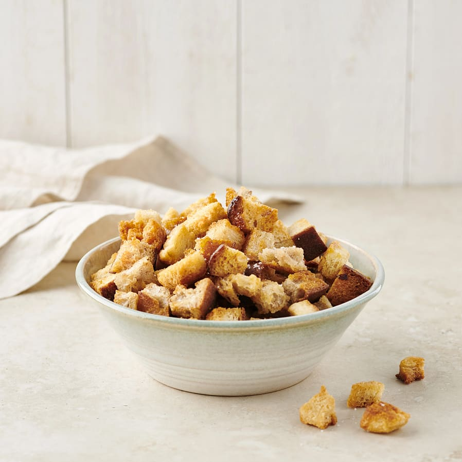

- 4 skivor Ljust bröd
- Olivolja eller Smör
- Salt
- Vitlökspulver
Du behöver:
Krutonger
(4-6 portioner)
1. Skär brödet i kuber
2. Stek brödet i oljan (eller smör) i ca. 5 min eller tills dem får färg
3. Krydda med salt och vitlök